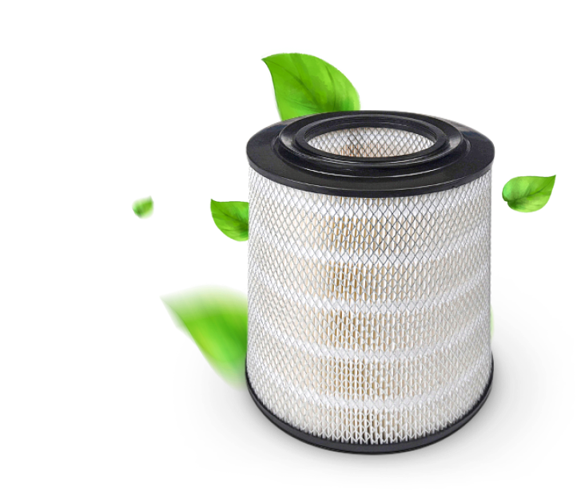
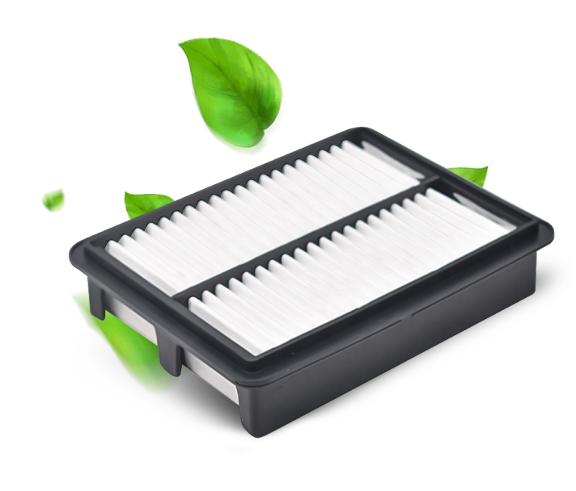

AIR FILTER
Azumi uses the world's leading technologies for filtering air from all kinds of contaminants, including particles of the smallest size for the production of its Filtration Products.
AZUMI PRESENTS 2 TYPES OF AIR FILTERS:
Radial Cyclone Air Filters

Metal mesh panels on the outer and inner cylinders increase the strength of the filter and protect the element from engine back-fire. Fire- and heat-resistant, but flexible material is used to make fixing plates on both ends of the filter element. The plates perform a kind of fixing function and provide "air tightness" of the filter.
Panel Element Air Filter

The air passes over the entire plane of the filter, which reduces flow restriction. The process of high-quality molding of the filter material allows you to achieve perfectly even and identical folds, which allows you to distribute the air flow in the best way.